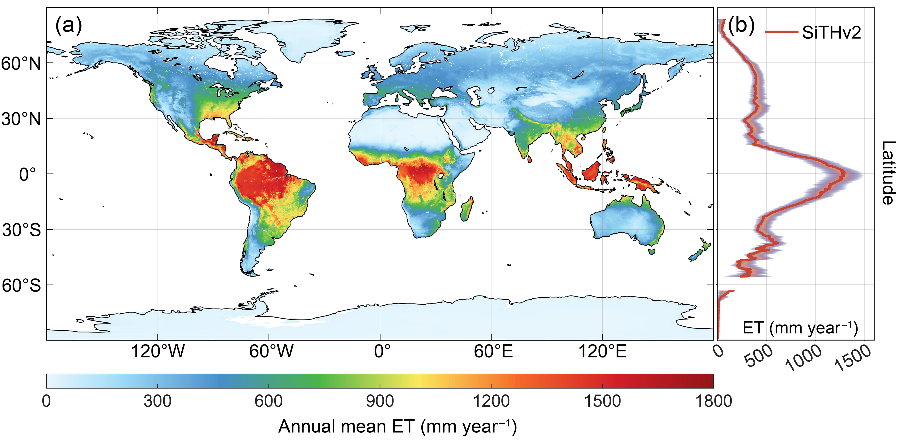

Welcome !
I am currently an Associate Professor at the School of Geospatial Engineering and Science, Sun Yat-Sen University (SYSU). Prior to joining SYSU, I worked as a Postdoctoral Research Fellow at the School of Biological Sciences and the Department of Mathematics at The University of Hong Kong (2021-2024), collaborating with Prof. Jin Wu and Prof. Michael Ng. I also gained research training as a Special Research Associate at the Institute of Tibetan Plateau Research, Chinese Academy of Sciences (2018-2021), supervised by Prof. Xin Li on eco-hydrology and remote sensing.
My research starts from modeling global evapotranspiration and soil water dynamics, focusing on the terrestrial water cycle and its interactions with climate change. The Bayesian approaches have usually been used in my projects to explore the sensitivity and optimization of model parameters and structural errors. By combining process-based model and multi-source remotely sensed and ground-based observations, I am trying to understand the response of the terrestrial water cycle and ecosystem resilience to climate change, particularly under extreme events.
We are looking for self-motivated Ph.D students, Master students, Undergraduate students, and Postdocs to join our team. 课题组招收2024年入学的硕士生，博士生。长期招聘博士后和研究助理。同时，非常欢迎优秀的本科生加入。我们与香港大学、中国科学院、兰州大学等相关实验室有密切的合作, 可推荐课题组成员去相关实验室交流或联合培养。请感兴趣的同学与我邮件联系，期待你的加入！
Contact
- Email: zhangkun3 (at) mail.sysu.edu.cn
- Office: Room E920, Hanlin Building 3, Zhuhai Campus of SYSU, Zhuhai, China
Main Research
Terrestrial Evapotranspiration (ET) Modelling
Model parameters are significant factors influencing the model performance. Based on the current commonly used process-based remote sensing evapotranspiration models, we identified and analyzed the key parameter functions under different plant functional types using the eddy covariance (EC) observations across the globe, and gave a more suitable set of optimized parameters using a data-model fusion algorithm under the Bayesian framework (Zhang et al., 2017 ). Moreover, multiscale verification was expanded from the plot scale to the global scale, and the global ET estimates were compared with the mainstream ET products (Zhang et al., 2019 ). In addition, A physically-based ecohydrological model, called Simple Terrestrial Hydrosphere (SiTHv1), was developed and updated (SiTHv2) to estimate the terrestrial ET and ET-related variables based on the groundwater-soil-plant-atmosphere continuum. The major feature in SiTH model is to adjust the allocation of potential plant transpiration to different soil layers combined with root distribution and soil water conditions, which can assure the adaptability of plant growth (Zhu et al., 2019 ; Zhang et al., 2022 ).
Relevant codes are available at GitHub for PT-JPLurl and MOD16
url. The terrestrial ET data set based on
SiTHv2
(daily, 0.1° globally) can be achieved from the TPDC
url.

Estimation of Global Irrigation Water Use
Quantification of the global irrigation water use (IWU) is crucial to understanding the
anthropogenic disturbance of the natural hydrological cycle and optimal agricultural water
management. However, it is challenging to obtain time series data with the conventional
survey-based approach, while the current satellite-based IWU estimations are subject to data
gaps and the model structure. Hence, we propose a comprehensive framework to couple the
different processes associated with irrigation and integrate multiple satellite observations
to estimate the global IWU (Zhang et al.,
2022
). The ensemble IWU estimate demonstrates an improved performance when compared to the
IWU obtained from individual satellite observations. Large amounts of IWU are apparent in
India, China, the US, Europe, and Pakistan, making up over 70 percent of the global IWU. A
general underestimation of IWU is found both in this work and previous studies, due to the
coarse resolution and asynchronism of the various satellite products, the changes in
irrigated areas, and the deficiency in detecting irrigation events under the case of
saturated soil moisture. Nevertheless, the proposed framework has showed advantages in
integrating multiple precipitation and soil moisture data to address the uncertainties in
estimating global IWU, and is a new attempt to use satellite to monitor global IWU.
Generated data set is available at the TPDC
url.
Extreme climate events, drivers and plant response
In the context of global warming, extreme climate events occur frequently. Heatwave is one of the climate extremes characterized by an abnormally high temperature near the Earth's surface, which has a substantial influence on ecosystem and human health. More than 166,000 people died worldwide due to heatwaves from 1998 to 2017, while the heatwave occurrences are projected to be more intense. Severe and sustained hot temperatures are usually tightly coupled with drought events, due to the enhanced atmospheric moisture demand and accelerated water loss in the soil. With reduced humidity, heatwaves can easily raise the risk of wildfires, which can be devastating to the natural environment and agriculture. Recently, I have been working on heatwave study to identify global heatwave episodes during the past several decades utilizing several data sources, such as ground-based, remote sensing, and reanalysis data. The establishment of heatwave information with high spatial and temporal resolution will be beneficial for explore its interaction with the climate variability and vegetation feedback over time series.
Publications
Published Papers
-
A global dataset of terrestrial evapotranspiration and soil moisture dynamics
from 1982 to 2020.
Zhang, K.*, Chen, H., Ma, N., Shang, S., Wang, Y., Xu, Q., & Zhu, G.*
Scientific Data, 2024. | PDF -
Energy partitioning over an irrigated vineyard in arid northwest China:
Variation characteristics, influence degree, and path of influencing factors.
Chen, H., Zhu, Y., Zhu, G., Zhang, Y., He, L., Xu, C., Zhang, K., Wang, J., Ayyamperumal, R., Fan, H., & Wang, B.
Agricultural and Forest Meteorology, 2024. 350, 109972. | PDF -
Exploring the ecological meanings of temperature sensitivity of ecosystem
respiration from different methods.
Zhang, Y., Zhu, G.*, Zhang, K.*, Huang, H., He, L., Xu, C., Chen, H., Su, Y., Zhang, Y., Fan, H., & Wang, B.
Science of the Total Environment, 2024. 923, 171403 | PDF -
Spectra-phenology integration for high-resolution, accurate, and scalable
mapping of foliar functional traits using time-series Sentinel-2 data.
Liu, S., Wang, Z., Lin, Z., Zhao, Y., Yan, Z., Zhang, K., Visser, M., Townsend, P., & Wu, J.
Remote Sensing of Environment, 2024. 305, 114082 | PDF -
Plant canopies exhibit stronger thermoregulation capability at the seasonal than
diurnal timescales.
Guo, Z., Zhang, K., Lin, H., Majcher, B. M., Lee, C. K. F., Still, C. J., & Wu, J.
Agricultural and Forest Meteorology, 2023. 339, 109582 | PDF -
Inconsistency and correction of manually observed ground surface temperatures
over snow-covered regions.
Cao, B., Wang, S., Hao, J., Sun, W., & Zhang, K.
Agricultural and Forest Meteorology, 2023. 338, 109518 | PDF -
The underappreciated importance of solar radiation in constraining spring
phenology of temperate ecosystems in the Northern and Eastern United States.
Gu, Y., Zhao, Y., Guo, Z., Meng, L., Zhang, K., Wang, J., Lee, C. K. F., Xie, J., Wang, Y., Yan, Z., Zhang, H., & Wu, J.
Remote Sensing of Environment, 2023. 294, 113617. | PDF -
Attenuated cooling effects with increasing water-saving irrigation: Satellite
evidence from Xinjiang, China.
Zhang, C., Dong, J., Leng, G., Doughty, R., Zhang, K., Han, S., Zhang, G., Zhang, X., & Ge, Q.
Agricultural and Forest Meteorology, 2023. 333, 109397 | PDF -
The biophysical climate mitigation potential of riparian forest ecosystems in
arid Northwest China.
Su, Y., Luo, F., Zhu, G., Zhang, K., & Zhang, Q.
Science of The Total Environment, 2023. 862, 160856 | PDF -
Does plant ecosystem thermoregulation occur? An extratropical assessment at
different spatial and temporal scales.
Guo, Z., Still, C. J., Lee, C. K. F., Ryu, Y., Blonder, B., Wang, J., Bonebrake, T. C., Hughes, A., Li, Y., Yeung, H. C. H., Zhang, K., Law, Y. K., Lin, Z., & Wu, J.
New Phytologist, 2022. | PDF -
Recent Increase of Spring Precipitation over the Three-River Headwaters
Region—Water Budget Analysis Based on Global Reanalysis (ERA5) and ET-Tagging
Extended Regional Climate Modeling.
Shang, S., Arnault, J., Zhu, G., Chen, H., Wei, J., Zhang, K., Zhang, Z., Laux, P., & Kunstmann, H.
Journal of Climate, 2022. 35(22), 3599–3617. | PDF -
A globally robust relationship between water table decline, subsidence rate, and
carbon release from peatlands.
Ma, L., Zhu, G., Chen, B., Zhang, K., Niu, S., Wang, J., Ciais, P., Zuo, H.
Communications Earth & Environment, 2022. 3(1), Article 1. | PDF -
Improvement of evapotranspiration simulation in a physically based
ecohydrological model for the groundwater-soil-plant-atmosphere
continuum.
Zhang, K., Zhu, G., Ma, N., Chen, H., Shang, S.
Journal of Hydrology, 2022. 613, 128440. | PDF -
Integrating remote sensing, irrigation suitability and statistical data for
irrigated cropland mapping over mainland China.
Zhang, L., Zhang, K., Zhu, X., Chen, H., Wang, W.
Journal of Hydrology, 2022. 613, 128413. | PDF -
Divergent trends in irrigation-water withdrawal and consumption over mainland
China.
Zhang, L., Zheng, D., Zhang, K., Chen, H., Ge, Y., Li, X.
Environmental Research Letter, 2022. 17(9), 094001. | PDF -
Understanding the dynamics of pandemic models to support predictions of COVID-19
transmission: Parameter sensitivity analysis of the SIR-type model.
Ma, C., Li, X., Zhao, Z., Liu, F., Zhang, K., Wu, A., Nie, X.
IEEE Journal of Biomedical and Health Informatics, 2022. 26(6), 2458-2468. | PDF -
Estimation of Global Irrigation Water Use by the Integration of Multiple
Satellite Observations.
Zhang, K., Li, X., Zheng, D., Zhang, L., Zhu, G.
Water Resources Research, 2022. 58(3), e2021WR030031. | PDF | ESI Highly Cited Papers -
Daytime and nighttime warming has no opposite effects on vegetation phenology
and productivity in the northern hemisphere.
Zhu, G., Wang, X., Xiao, J., Zhang, K., Wang, Y., He, H., Li, W., Chen, H.
Science of The Total Environment, 2022. 153386. | PDF -
Uncertainties in partitioning evapotranspiration by two remote sensing-based
models.
Chen, H., Zhu, G., Shang, S., Qin, W., Zhang, Y., Su, Y., Zhang, K., Zhu, Y., Xu, C.
Journal of Hydrology, 2022. 127223. | PDF -
Associated atmospheric mechanisms for the increased cold season precipitation
over the Three-River Headwaters region from the late 1980s.
Shang, S., Zhu, G., Wei, J., Li, Y., Zhang, K., Li, R., Arnault, J., Zhang, Z., Laux, P., Yang, Q., Dong, N., Gao, L., Kunstmann, H.
Journal of Climate, 2021. 34, 8033–8046. | PDF -
Discrepant responses between evapotranspiration- and transpiration-based
ecosystem water use efficiency to interannual precipitation
fluctuations.
Gu, C., Tang, Q., Zhu, G., Ma, J., Gu, C., Zhang, K., Sun, S., Yu, Q., Niu, S.
Agricultural and Forest Meteorology, 2021. 303, 108385. | PDF -
High agricultural water consumption led to the continued shrinkage of the Aral
Sea during 1992-2015.
Su, Y., Li, X., Feng, M., Nian, Y., Huang, L., Xie, T., Zhang, K., Chen, Feng, Huang, W., Chen, J., Chen, Fahu.
Science of The Total Environment, 2021. 777, 145993. | PDF -
Merging multiple satellite-based Precipitation products and gauge observations
using a novel double machine learning approach.
Zhang, L., Li, X., Zheng, D., Zhang, K., Ma, Q., Zhao, Y., Ge, Y.
Journal of Hydrology, 2021. 594, 125969. | PDF -
A spatial-temporal continuous dataset of the transpiration to evapotranspiration
ratio in China from 1981-2015.
Niu, Z., He, H., Zhu, G., Ren, X., Zhang, L., Zhang, K.
Scientific Data, 2020. 7, 369. | PDF -
Evapotranspiration Models Using Different LAI and Meteorological Forcing Data
from 1982 to 2017.
Chen, H., Zhu, G., Zhang, K., Bi, J., Jia, X., Ding, B., Zhang, Y., Shang, S., Zhao, N., Qin, W.
Remote Sensing, 2020. 12, 2473. | PDF -
Soil respiration in an irrigated oasis agroecosystem: linking
environmental controls with plant activities on hourly, daily and monthly
timescales.
Ma, T., Zhu, G., Ma, J., Zhang, K., Wang, S., Han, T., Shang, S.
Plant and Soil, 2020. 447, 347–364. | PDF -
Sensitivity analysis and estimation using a hierarchical
Bayesian method for the parameters of the
FvCB biochemical photosynthetic model.
Han, T., Zhu, G., Ma, J., Wang, S., Zhang, K., Liu, X., Ma, T., Shang, S., Huang, C.
Photosynthesis Research, 2020. 143, 45–66. | PDF -
Development and evaluation of a simple hydrologically based model for
terrestrial evapotranspiration simulations.
Zhu, G., Zhang, K.*, Chen, H., Wang, Y., Su, Y., Zhang, Y., Ma, J.
Journal of Hydrology, 2019. 577, 123928. | PDF -
Parameter Analysis and Estimates for the MODIS
Evapotranspiration Algorithm and
Multiscale Verification.
Zhang, K., Zhu, G., Ma, J., Yang, Y., Shang, S., Gu, C.
Water Resources Research, 2019. 55(3), 2211–2231. | PDF -
A Physically Based Method for Soil Evaporation Estimation by
Revisiting the Soil Drying
Process.
Wang, Y., Merlin, O., Zhu, G., Zhang, K.
Water Resources Research, 2019. 55, 9092–9110. | PDF -
An increasing trend in the ratio of
transpiration to total terrestrial evapotranspiration in China from 1982 to 2015
caused by greening and warming.
Niu, Z., He, H., Zhu, G., Ren, X., Zhang, L., Zhang, K., Yu, G., Ge, R., Li, P., Zeng, N., Zhu, X.
Agricultural and Forest Meteorology, 2019. 279, 107701. | PDF -
The characteristics of evapotranspiration and crop coefficients
of
an irrigated vineyard in arid Northwest China.
Wang, S., Zhu, G., Xia, D., Ma, J., Han, T., Ma, T., Zhang, K., Shang, S.
Agricultural Water Management, 2019. 212, 388-398. | PDF -
Partitioning evapotranspiration using an optimized
satellite-based ET model
across biomes.
Gu, C., Ma, J., Zhu, G., Yang, H., Zhang, K., Wang, Y., Gu, C.
Agricultural and Forest Meteorology, 2018. 259, 355–363. | PDF -
A new moving strategy for the sequential
Monte Carlo approach in optimizing the hydrological model parameters.
Zhu, G., Li, X., Ma, J., Wang, Y., Liu, S., Huang, C., Zhang, K., Hu, X.
Advances in Water Resources, 2018. 114, 164–179. | PDF -
A hierarchical Bayesian
approach for multi-site optimization of a satellite-based evapotranspiration
model.
Su, Y., Feng, Q., Zhu, G., Gu, C., Wang, Y., Shang, S., Zhang, K., Han, T., Chen, H., Ma, J.
Hydrological Processes, 2018. 32, 3907–3923. | PDF -
Parameter sensitivity analysis and optimization for a
satellite‐based
evapotranspiration model across multiple sites using Moderate Resolution Imaging
Spectroradiometer and flux data.
Zhang, K., Ma, J., Zhu, G., Ma, T., Han, T., Feng, L. L.
Journal of Geophysical Research: Atmospheres , 2017. 122(1), 230-245. | PDF -
Evaluating the complementary relationship for estimating
evapotranspiration using the multi-site data across north China.
Zhu, G., Zhang, K., Li, X., Liu, S., Ding, Z., Ma, J., Huang, C., Han, T., He, J.
Agricultural and Forest Meteorology, 2016. 230, 33-44. | PDF -
Multi‐model ensemble prediction of terrestrial
evapotranspiration across
north China using Bayesian model averaging.
Zhu, G., Li, X., Zhang, K., Ding, Z., Han, T., Ma, J., Huang, C., He, J., Ma, T.
Hydrological Processes, 2016. 30(16), 2861-2879. | PDF -
Energy exchange and evapotranspiration over irrigated seed maize agroecosystems
in a desert-oasis region, northwest China.
Zhang, Y., Zhao, W., He, J., Zhang, K.
Agricultural and Forest Meteorology, 2016. 223, 48–59. | PDF -
Hysteresis loops between canopy conductance of grapevines and meteorological
variables in an oasis ecosystem.
Bai, Y., Zhu, G., Su, Y., Zhang, K., Han, T., Ma, J., Wang, W., Ma, T., Feng, L.
Agricultural and Forest Meteorology, 2015. 214, 319-327. | PDF -
Simultaneous parameterization of the two-source evapotranspiration model by
Bayesian approach: application to spring maize in an
arid region of northwest China.
Zhu, G.F., Li, X., Su, Y.H, Zhang, K., Bai, Y., Ma, J.Z., Li, C.B., Hu, X.L., He, J.H.
Geoscientific Model Development, 2014. 7, 741-775. | PDF -
Modelling evapotranspiration in an alpine grassland ecosystem on Qinghai‐Tibetan
plateau.
Zhu, G., Su, Y., Li, X., Zhang, K., Li, C., Ning, N.
Hydrological Processes, 2014. 28(3), 610-619. | PDF -
Energy flux partitioning and evapotranspiration in a sub‐alpine spruce forest
ecosystem.
Zhu, G., Lu, L., Su, Y., Wang, X., Cui, X., Ma, J., He, J., Zhang, K., Li, C.
Hydrological Processes, 2014. 28(19), 5093-5104. | PDF -
Estimating actual evapotranspiration from an alpine grassland on Qinghai-Tibetan
plateau using a
two-source model and parameter uncertainty analysis by Bayesian
approach.
Zhu, G., Su, Y., Li, X., Zhang, K., Li, C.
Journal of Hydrology, 2013. 476, 42-51. | PDF -
Changes in Transpiration and Evapotranspiration of
Grapevines (Vitis vinifera L.) in Arid Oasis in Northwestern China
Wang Shangtao, Zhao Nan, Zhang Yang, Zhang Kun, Zhu Gaofeng.
Journal of Irrigation and Drainage, 2021. 40(12):1-6. | PDF -
Research progress on parameter sensitivity analysis in ecological and
hydrological models of remote sensing
Ma Hanqing, Zhang Kun, Ma Chunfeng, Wu Xiaodan, Wang Chen, Zheng Yi, Zhu Gaofeng, Yuan Wenping, Li Xin.
National Remote Sensing Bulletin, 2021. 20219089. | PDF -
Spatiotemporal Variation of Temperature and Precipitation in
Northwest China in recent 54 Years.
Shang, S., Lian, L., Ma, T., Zhang, K., Han, T.
Arid Zone Research, 2018. 35(01):68-76. | PDF -
Scale expansion of evapotranspiration in different vegetation types based on the
artificial neural network.
Feng, L., Zhang, K., Han, T., Ma, T., Sun, S., Zhu, G.
Journal of Lanzhou University: Natural Sciences, 2017. 53(2), 186-193. | PDF -
Temporal-spatial variation characteristic in grapevine soil respiration and its
relationship with the soil temperature and moisture.
Ma, T., Zhu, G., Zhang, K., Feng, L.
Journal of Lanzhou University: Natural Sciences, 2016. 52(1), 43-50. | PDF -
Characteristics and seasonal variations of plant leaf photosynthesis.
Han, T., Feng, L, Ma, T., Zhang, K., Bai, Y., Zhu, G.
Journal of Lanzhou University: Natural Sciences, 2016. 52(4), 492-497. | PDF -
Migration and accumulation of nitrate in soil profiles in Dunhuang.
Zhao, M., Ma, J., Sun, P., Zhao, W., Zhang, K.
Journal of Arid Land Resources and Environment, 2016. (05), 135-142. | PDF -
Investigation of spatial representativeness for flux data of continental river
basin in arid region of northwestern China.
Zhang, K., Han, T., Zhu, G., Bai, Y., Ma, T.
Arid Land Geography, 2015. 38(04), 743-752. | PDF -
Analysis of variation of sap flow velocity and water consumption of grapevine in
the Nanhu oasis, Dunhuang, China.
Bai, Y., Zhu, G., Zhang, K., Ma, T.
Journal of Desert Research, 2015. 35(1), 175-181. | PDF -
Research of transpiration and evapotranspiration from a grapevine canopy
combining the sap flow and eddy covariance techniques.
Bai, Y., Zhu, G., Zhang, K., Ma, T.
Acta Ecologica Sinica, 2015. 35(23), 7821-7831. | PDF -
Characteristics of spatial distribution and accumulation of nitrate in the
unsaturated soil profiles in Dunhuang.
Zhao, M., Ma, J., Sun, P., Zhao, W., Zhang, K.
Environmental Chemistry, 2015. (10), 1823-1831. | PDF -
Gap filling for evapotranspiration based on BP artificial neural
networks.
Zhang, K., Zhu, G., Bai, Y., Ma, T.
Journal of Lanzhou University: Natural Sciences, 2014. 50(3), 348-355. | PDF -
Organic carbon density and storage in different soils on the Loess
Plateau.
Fu, D., Liu, M., Liu, L., Zhang, K., Zuo, J.
Arid Zone Research, 2014. 31(01), 44-50. | PDF
In Chinese
Papers in review
-
Heatwaves on the rise: the role of El Niño-Southern Oscillation and local
water-energy exchanges in shaping global patterns.
Zhang, K., Li, J., Guo, Z., Liu, S., Zhu, G., Shang, S., Zhang, J., Ng, M.*, & Wu, J*.
Weather and Climate Extremes, Major Revision -
Global prevalence of compound heatwaves in recent decades.
Zhang, K., Li, J.*, Ng, M.*, Guo, Z., Tai, A., Liu, S., Zhang, J., Wang, X., & Wu, J*.
Science Bulletin, Under review -
Long-term trend and interannual variability in global terrestrial evapotranspiration
are driven by divergent regions.
Chen, H.#, Zhang, K.#, Zhu, G., Fan, L., Li, X., Wang, Y., Wang, X., Zhu, Y., Shang, S., & Xiao, J.
Geophysical Research Letters, Under review -
Spatial-temporal variations in evapotranspiration across the continental United
States: An atmospheric water balance perspective.
Shang, S., Zhu, G.*, Zhang, K.,, Ma, N.*, Chen, H., Chen, Y., Wang, Y., & Zhang, Z.
Journal of Hydrology, Major Revision -
Weakened biophysical cooling effects of irrigation with increasing water-saving
technology.
Zhang, C., Ge, Q.*, Li, Y., Thiery, W., Peng, S., Leng, G., Zhao, G., Jin, Z., Li, W., Zhang, K., Zhang, X., Han, S., Zhang, G., Xiao, X., & Dong, J.*
Remote Sensing of Environment, Under review -
Evaluating the sensitivity of satellite-derived gross primary productivity to
combined atmospheric dryness and soil water deficit.
Wang, X., Guo, Z., Zhang, K., Fu, Z., Lee, C., Yang, D., Detto, M., Ryu, Y., Zhang, Y., & Wu, J.*
Remote Sensing of Environment, Under review
Talks
- Variation of global compound heatwaves and their associations with climate
variability.
EGU General Assembly, EGU23-4268. April 23th-28th, 2023. Vienna. (Poster) - Estimation of Global Irrigation Water Use by Integrating Multiple
Satellite Observations.
Asia Oceania Geosciences Society (AOGS 2021), 18th Annual Meeting. August 4th, 2021. Virtual. (Oral) - Potential of global irrigation estimates from multiple satellite observations.
China Society of Natural Resources, Annual Meeting (2020-2021). June 18th, 2021. Chengdu. (Oral) - A better estimation of global terrestrial evapotranspiration by data-model
fusion scheme.
Hydrology and Water Resources sub-forum, Annual Meeting of Chinese Hydraulic Society. October 19th, 2020. Beijing. (Oral) - Parameter sensitivity analysis and optimization for a global
remote sensing-based evapotranspiration model.
EGU General Assembly, EGU2019-4742. April 7th-12th, 2019. Vienna. (Oral) - Improvement of a
satellite-based evapotranspiration model based on multiple in-situ flux
observations.
The 15th Water Resources Commission, China Society of Natural Resources. December 10th-12th, 2017. Shenzhen. (Oral) - Oasis flux observation and data gap filling
based on artificial neural networks.
Annual Meeting of HiWATER. January 8th-10th, 2013. Beijing. (Oral)
Affiliations
Associate Professor
Sun Yat-Sen University (SYSU)
School of Geospatial Engineering and Science
Postdoctoral Fellow
The University of Hong Kong (HKU)
Department of Mathematics & School of Biological Sciences
Special Research Associate
Institute of Tibetan Plateau Research, Chinese Academy of Sciences (ITPCAS)
National Tibetan Plateau Data Center (TPDC)
Education
Ph.D. in Physical Geography (Eco-Hydrology)
Lanzhou University, Lanzhou, China
Key Laboratory of West China's Environmental System
Joint Ph.D. in Eco-Hydrology
Flinders University, Adelaide, Australia
National Centre for Groundwater Research and Training (NCGRT)
B.S. in Geographic Information Science
Northwest A&F University, Yangling, China
School of Natural Resources and Environment
Fundings
The Young Scientists Fund of the National Natural Science Foundation of China
Quantitative estimates for water cycle closure and uncertainties of endorheic basins along the Silk Road
PI, 2019–2022, ￥300,000
The China Postdoctoral Science Foundation
Estimation of irrigation water use and its hydrological implication in Heihe river basin based on multi-source remote sensing data
PI, 2019–2021, ￥80,000
Journal Reviewer
| Global Change Biology | Water Resources Research |
| Journal of Hydrology | Hydrology and Earth System Sciences |
| Science Bulletin | WIREs Water |
| Science of the Total Environment | GIScience & Remote Sensing |
| IEEE JSTAR | Remote Sensing |
| Software Impact | Frontiers in Environmental Science |
Awards & Honors
|
Western Environment Award, 2020 Lanzhou University, China |
|
National Scholarship, 2017 Ministry of Education, China |
|
CSC Scholarship, 2016 CSC Scholarship, 2016 |
|
First-class Academic Scholarship, 2012-2014
Lanzhou University, China |